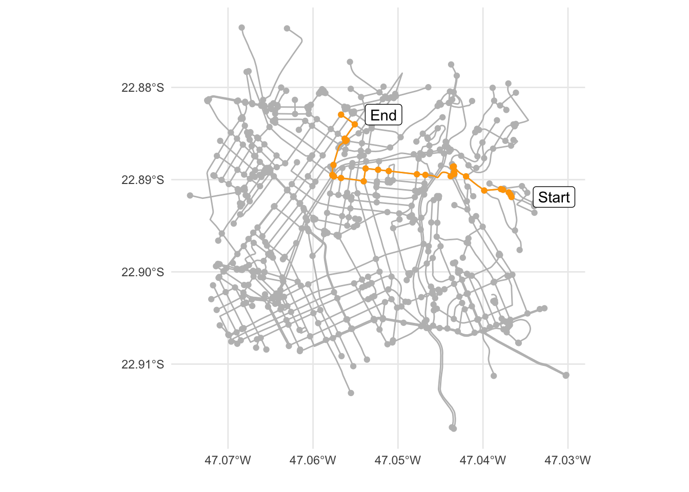

bbox <- list(
p1 = list(long = -47.0708, lat = -22.9075),
p2 = list(long = -47.0348, lat = -22.8804)
)
leaflet::leaflet() |>
leaflet::addTiles()|>
leaflet::addRectangles(
lng1 = bbox$p1$long, lat1 = bbox$p1$lat,
lng2 = bbox$p2$long, lat2 = bbox$p2$lat,
fillColor = "transparent"
) |>
leaflet::fitBounds(
lng1 = bbox$p1$long, lat1 = bbox$p1$lat,
lng2 = bbox$p2$long, lat2 = bbox$p2$lat,
)Travel Analysis
Build query
Set the bounds in the https://www.openstreetmap.org/.
Set an area to analyse
- References to queries https://wiki.openstreetmap.org/wiki/Map_Features.
- Problems with internet conection use
assign("has_internet_via_proxy", TRUE, environment(curl::has_internet))
if (!exists("has_internet_via_proxy")) {
assign("has_internet_via_proxy", TRUE, environment(curl::has_internet))
}
query <- osmdata::opq(bbox = unlist(bbox)) |>
osmdata::add_osm_feature(key = "highway") |>
osmdata::osmdata_sf()Return lines
query_lines <- query$osm_linesVisualise the resulting object
query_lines |>
sf::st_geometry() |>
ggplot2::ggplot() +
ggplot2::geom_sf(colour = "gray") +
ggplot2::theme_minimal()Cast polygons to lines
poly_to_lines <- sf::st_cast(query$osm_polygons, "LINESTRING")Bind all lines together
query_lines <- dplyr::bind_rows(query_lines, poly_to_lines)
query_lines |>
sf::st_geometry() |>
ggplot2::ggplot() +
ggplot2::geom_sf(colour = "gray") +
ggplot2::theme_minimal()Convert to sfnetwork object
highway_net <- sfnetworks::as_sfnetwork(query_lines, directed = FALSE)Plot
ggplot2::ggplot() +
ggplot2::geom_sf(data = sf::st_as_sf(highway_net, "edges"), col = "gray") +
ggplot2::geom_sf(data = sf::st_as_sf(highway_net, "nodes"), col = "gray") +
ggplot2::theme_minimal()Remove nodes that have only two edges connected
highway_simple <- tidygraph::convert(highway_net, sfnetworks::to_spatial_smooth)Plot
ggplot2::ggplot() +
ggplot2::geom_sf(data = sf::st_as_sf(highway_simple, "edges"), col = "gray") +
ggplot2::geom_sf(data = sf::st_as_sf(highway_simple, "nodes"), col = "gray") +
ggplot2::theme_minimal()Calculating shortest paths
Filter connected components
Our network consists of several unconnected components
tidygraph::with_graph(highway_simple, tidygraph::graph_component_count())[1] 490connected_net = highway_simple |>
tidygraph::activate("nodes") |>
dplyr::filter(tidygraph::group_components() == 1)Weights
connected_net <-
connected_net |>
tidygraph::activate("edges") |>
dplyr::mutate(weight = sfnetworks::edge_length())Plot
ggplot2::ggplot() +
ggplot2::geom_sf(data = sf::st_as_sf(connected_net, "edges"), col = "gray") +
ggplot2::geom_sf(data = sf::st_as_sf(connected_net, "nodes"), col = "gray") +
ggplot2::theme_minimal()Find shortest paths
paths <- sfnetworks::st_network_paths(connected_net, from = 1, to = 600, weights = "weight")Plot
node_paths <-
connected_net |>
tidygraph::activate("nodes") |>
dplyr::slice(
paths |> dplyr::pull(node_paths) |> unlist()
)
edge_paths <-
connected_net |>
tidygraph::activate("edges") |>
dplyr::slice(
paths |> dplyr::pull(edge_paths) |> unlist()
)
node_labels <-
connected_net |>
tidygraph::activate("nodes") |>
dplyr::slice(
paths |> dplyr::pull(node_paths) |> unlist() |> range()
)
ggplot2::ggplot() +
ggplot2::geom_sf(data = sf::st_as_sf(connected_net, "edges"), col = "gray") +
ggplot2::geom_sf(data = sf::st_as_sf(connected_net, "nodes"), col = "gray") +
ggplot2::theme_minimal() +
ggplot2::geom_sf(data = sf::st_as_sf(node_paths, "nodes"), col = "orange") +
ggplot2::geom_sf(data = sf::st_as_sf(node_paths, "edges"), col = "orange") +
ggplot2::geom_sf_label(data = sf::st_as_sf(node_labels, "nodes"),
ggplot2::aes(label = c("Start", "End")),
nudge_x = 0.005) +
ggplot2::labs(x = "", y = "")
Route optimization
set.seed(403)
rdm <- connected_net |>
sf::st_bbox() |>
sf::st_as_sfc() |>
sf::st_sample(4, type = "random")Compute cost matrix
net <- tidygraph::activate(connected_net, "nodes")
cost_matrix <- sfnetworks::st_network_cost(net,
from = rdm,
to = rdm,
weights = "weight")
# Use nearest node indices as row and column names.
rdm_idxs <- sf::st_nearest_feature(rdm, net)
row.names(cost_matrix) <- rdm_idxs
colnames(cost_matrix) <- rdm_idxs
round(cost_matrix, 0)Units: [m]
38 320 582 507
38 0 3071 3840 5145
320 3071 0 4768 6038
582 3840 4768 0 4594
507 5145 6038 4594 0Find the route
tour <- TSP::solve_TSP(TSP::TSP(units::drop_units(cost_matrix)))
tour_idxs <- as.numeric(names(tour))
tour_idxs[1] 507 582 38 320# Approximate length of the route.
# In meters, since that was the unit of our cost values.
round(TSP::tour_length(tour), 0)[1] 17543Computing the shortest paths between each location
# Define the nodes to calculate the shortest paths from.
# Define the nodes to calculate the shortest paths to.
# All based on the calculated order of visit.
from_idxs <- tour_idxs
to_idxs <- c(tour_idxs[2:length(tour_idxs)], tour_idxs[1])
# Calculate the specified paths.
tsp_paths <- mapply(sfnetworks::st_network_paths,
from = from_idxs,
to = to_idxs,
MoreArgs = list(x = connected_net, weights = "weight")
)
# Plot the results
tsp_paths_fun <- function(x, index) {
tsp_edge_paths <- connected_net |>
tidygraph::activate("edges") |>
dplyr::slice(tsp_paths[, index]$edge_paths |> unlist())
ggplot2::geom_sf(data = sf::st_as_sf(tsp_edge_paths, "edges"),
ggplot2::aes(col = "Optimal route"), lwd = 1.3)
}
p <- ggplot2::ggplot() +
ggplot2::geom_sf(data = sf::st_as_sf(connected_net, "edges"), col = "gray") +
ggplot2::geom_sf(data = sf::st_as_sf(connected_net, "nodes"), col = "gray") +
ggplot2::theme_minimal()
for (i in 1:3) {
p <- p + tsp_paths_fun(tsp_paths, i)
}
tsp_labels <-
connected_net |>
tidygraph::activate("nodes") |>
dplyr::slice(
paths |> dplyr::pull(node_paths) |> unlist() |> range()
)
p + ggplot2::geom_sf(data = sf::st_as_sf(rdm, "nodes"),
ggplot2::aes(col = "Visits"))+
ggplot2::geom_sf_label(data = sf::st_as_sf(rdm, "nodes"),
ggplot2::aes(label = 1:4),
nudge_x = 0.005) +
ggplot2::labs(x = "", y = "", colour = "") +
ggplot2::scale_color_manual(values = c("orange", "blue"))Using OR Tools from google
Traveling Salesperson Problem
reticulate::use_virtualenv("../venv", required = TRUE)
constraint_solver <- reticulate::import("ortools.constraint_solver")
mode(cost_matrix) <- "integer"
# Create data
create_data_model <- function() {
data <- reticulate::dict()
data['distance_matrix'] <- cost_matrix
data['distance_matrix'] <- data['distance_matrix']$tolist()
data['num_vehicles'] <- 1L
data['depot'] <- 0L
return(data)
}
# Create the routing model
data <- create_data_model()
manager <- constraint_solver$pywrapcp$RoutingIndexManager(
length(data['distance_matrix']),
data['num_vehicles'],
data['depot']
)
routing <- constraint_solver$pywrapcp$RoutingModel(manager)
# Create the distance callback
distance_callback <- function(from_index, to_index) {
from_node <- manager$IndexToNode(from_index)
to_node <- manager$IndexToNode(to_index)
return(data['distance_matrix'][from_node][to_node])
}
transit_callback_index <- routing$RegisterTransitCallback(distance_callback)
# Set the cost of travel
routing$SetArcCostEvaluatorOfAllVehicles(transit_callback_index)
# Set search parameters
search_parameters <- constraint_solver$pywrapcp$DefaultRoutingSearchParameters()
search_parameters$first_solution_strategy = (
constraint_solver$routing_enums_pb2$FirstSolutionStrategy$PATH_CHEAPEST_ARC)
solution <- routing$SolveWithParameters(search_parameters)
# Save routes to a list or array
get_routes <- function(solution, routing, manager) {
routes <- list()
for (route_nbr in seq(0, routing$vehicles() - 1)) {
index <- routing$Start(route_nbr)
route <- c(manager$IndexToNode(index))
while(!routing$IsEnd(index)) {
index <- solution$Value(routing$NextVar(index))
route <- append(route, manager$IndexToNode(index))
}
routes[[route_nbr + 1]] <- route
names(routes)[route_nbr + 1] <- route_nbr
}
return(routes)
}
(routes <- get_routes(solution, routing, manager))$`0`
[1] 0 1 3 2 0Vehicle Routing Problem
set.seed(711)
index_visits <- sample(1:603, 9)
visits <- connected_net |>
tidygraph::activate("nodes") |>
dplyr::slice(index_visits)
depot <- connected_net |>
tidygraph::activate("nodes") |>
dplyr::slice(23)
ggplot2::ggplot() +
ggplot2::geom_sf(data = sf::st_as_sf(connected_net, "edges"), col = "gray") +
ggplot2::geom_sf(data = sf::st_as_sf(connected_net, "nodes"), col = "gray") +
ggplot2::theme_minimal() +
ggplot2::geom_sf(data = sf::st_as_sf(visits, "nodes"),
ggplot2::aes(col = "Visits")) +
ggplot2::geom_sf(data = sf::st_as_sf(depot, "nodes"),
ggplot2::aes(col = "Depot")) +
ggplot2::labs(x = "", y = "", colour = "") +
ggplot2::scale_color_manual(values = c("Visits" = "blue",
"Depot" = "orange"))Compute cost matrix
cost_matrix_route_problem <-
sfnetworks::st_network_cost(connected_net,
from = c(23, index_visits),
to = c(23, index_visits),
weights = "weight")
mode(cost_matrix_route_problem) <- "integer"Solution
# Create data
create_data_model <- function() {
data <- reticulate::dict()
data['distance_matrix'] <- cost_matrix_route_problem
data['distance_matrix'] <- data['distance_matrix']$tolist()
data['num_vehicles'] <- 3L
data['depot'] <- 0L
return(data)
}
# Create the routing model
data <- create_data_model()
manager <- constraint_solver$pywrapcp$RoutingIndexManager(
length(data['distance_matrix']),
data['num_vehicles'],
data['depot']
)
routing <- constraint_solver$pywrapcp$RoutingModel(manager)
# Create the distance callback
distance_callback <- function(from_index, to_index) {
from_node <- manager$IndexToNode(from_index)
to_node <- manager$IndexToNode(to_index)
return(data['distance_matrix'][from_node][to_node])
}
transit_callback_index <- routing$RegisterTransitCallback(distance_callback)
# Set the cost of travel
routing$SetArcCostEvaluatorOfAllVehicles(transit_callback_index)
# Add a distance dimension
dimension_name <- 'Distance'
routing$AddDimension(
transit_callback_index,
0L, # no slack
15000L, # vehicle maximum travel distance
TRUE, # start cumul to zero
dimension_name)[1] TRUEdistance_dimension <- routing$GetDimensionOrDie(dimension_name)
distance_dimension$SetGlobalSpanCostCoefficient(100L)
# Set search parameters
search_parameters <- constraint_solver$pywrapcp$DefaultRoutingSearchParameters()
search_parameters$first_solution_strategy = (
constraint_solver$routing_enums_pb2$FirstSolutionStrategy$PATH_CHEAPEST_ARC)
solution <- routing$SolveWithParameters(search_parameters)
# Save routes to a list or array
get_routes <- function(solution, routing, manager) {
routes <- list()
for (route_nbr in seq(0, routing$vehicles() - 1)) {
index <- routing$Start(route_nbr)
route <- c(manager$IndexToNode(index))
while(!routing$IsEnd(index)) {
index <- solution$Value(routing$NextVar(index))
route <- append(route, manager$IndexToNode(index))
}
routes[[route_nbr + 1]] <- route
names(routes)[route_nbr + 1] <- route_nbr
}
return(routes)
}
(routes <- get_routes(solution, routing, manager))$`0`
[1] 0 6 9 0
$`1`
[1] 0 3 2 5 0
$`2`
[1] 0 7 1 8 4 0Calculate the specified paths.
real_routes <- lapply(routes, \(x) c(23, index_visits)[x + 1])
vrp_paths <- function(x) {
results <- list()
for (i in seq(length(x))) {
from_idxs <- unique(x[[i]])
to_idxs <- c(from_idxs[2:length(from_idxs)], from_idxs[1])
paths <- mapply(sfnetworks::st_network_paths,
from = from_idxs,
to = to_idxs,
MoreArgs = list(x = connected_net, weights = "weight"))
results[[i]] <- paths
}
return(results)
}Plot the results
vrp_paths_fun <- function(x, index, vehicle) {
vrp_edge_paths <- connected_net |>
tidygraph::activate("edges") |>
dplyr::slice(vrp_paths(x)[[vehicle]][, index]$edge_paths |> unlist())
ggplot2::geom_sf(data = sf::st_as_sf(vrp_edge_paths, "edges"),
ggplot2::aes(col = as.character(vehicle)), lwd = 1.3)
}
p <- ggplot2::ggplot() +
ggplot2::geom_sf(data = sf::st_as_sf(connected_net, "edges"), col = "gray") +
ggplot2::geom_sf(data = sf::st_as_sf(connected_net, "nodes"), col = "gray") +
ggplot2::theme_minimal()
for (j in seq(length(real_routes))) {
for (i in seq(length(real_routes[[j]]) - 1)) {
p <- p + vrp_paths_fun(real_routes, i, j)
}
}
p + ggplot2::geom_sf(data = sf::st_as_sf(visits, "nodes"),
ggplot2::aes(col = "Visits")) +
ggplot2::geom_sf(data = sf::st_as_sf(depot, "nodes"),
ggplot2::aes(col = "Depot")) +
ggplot2::labs(x = "", y = "", colour = "")Analyse with partial routes, time windows and start point
# reticulate::source_python()